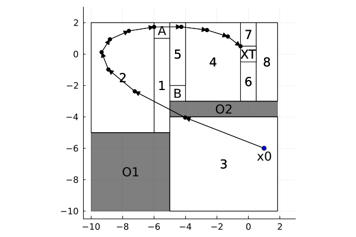

Gol–Lazar–Belta: optimal control of a PWA system by MIQP
| System | 2-D discrete-time, piecewise affine |
| Specification | reach-avoid with a cost |
| Solver | Bemporad–Morari (mixed-integer quadratic program) |
Driven through MathOptInterface directly: a PWA system with an explicit cost is not something the JuMP front-end can express. This example reproduces parts of the numerical results of [3]. A similar example reproducing all results of [3] is available as a codeocean capsule in [4].
This example was borrowed from [1, Example VIII.A] and tackles an optimal control for the hybrid system with state evolution governed by
\[x(k+1) = \begin{bmatrix} 1 & 1 \\ 0 & 1 \end{bmatrix}x(k) + \begin{bmatrix} 0.5 \\ 1.0 \end{bmatrix} u(k)\]
The goal is to take the state vector toward a target set XT by visiting one of the squares A or B and avoiding the obstacles O1 and O2
First, let us import CDDLib, GLPK, OSQP, JuMP, Pavito and Ipopt
import CDDLib
import GLPK
import OSQP
using JuMP
import Pavito
import HiGHS
import IpoptAt this point we import Dionysos
using Dionysos
const DI = Dionysos
const UT = DI.Utils
const ST = DI.System
const OP = DI.OptimDionysos.OptimAnd the file defining the hybrid system for this problem
include(
joinpath(
dirname(dirname(pathof(Dionysos))),
"problems",
"GolLazarBelta",
"gol_lazar_belta.jl",
),
)Main.GolLazarBeltaNow we instantiate our optimal control problem using the function provided by gollazarbelta.jl
problem = GolLazarBelta.problem(CDDLib.Library(), Float64);Finally, we select the method presented in [2] as our optimizer
qp_solver = optimizer_with_attributes(
OSQP.Optimizer,
"eps_abs" => 1e-8,
"eps_rel" => 1e-8,
"max_iter" => 100000,
MOI.Silent() => true,
);
mip_solver = optimizer_with_attributes(HiGHS.Optimizer, MOI.Silent() => true);
cont_solver = optimizer_with_attributes(Ipopt.Optimizer, MOI.Silent() => true);
miqp_solver = optimizer_with_attributes(
Pavito.Optimizer,
"mip_solver" => mip_solver,
"cont_solver" => cont_solver,
MOI.Silent() => true,
);
algo = optimizer_with_attributes(
OP.BemporadMorari.Optimizer{Float64},
"continuous_solver" => qp_solver,
"mixed_integer_solver" => miqp_solver,
"indicator" => false,
"print_level" => 0,
);and use it to solve the given problem, with the help of the abstraction layer MathOptInterface provided by JuMP
optimizer = MOI.instantiate(algo)
MOI.set(optimizer, MOI.RawOptimizerAttribute("problem"), problem)
MOI.optimize!(optimizer)22.001380920410156We check the solver time
MOI.get(optimizer, MOI.SolveTimeSec())22.001380920410156the termination status
termination = MOI.get(optimizer, MOI.TerminationStatus())LOCALLY_SOLVED::TerminationStatusCode = 4the objective value
objective_value = MOI.get(optimizer, MOI.ObjectiveValue())11.385062952226304and recover the corresponding continuous trajectory
xu = MOI.get(optimizer, ST.ContinuousTrajectoryAttribute());A little bit of data visualization now:
using Plots
import Polyhedra
using HybridSystems
using SuppressorAuxiliary function for annotation
function text_in_set_plot!(fig, po::Polyhedra.Rep, t)
##solve finding center (HiGHS is currently the best open source LP solver)
solver = optimizer_with_attributes(HiGHS.Optimizer, MOI.Silent() => true)
if t !== nothing
c, r = Polyhedra.hchebyshevcenter(Polyhedra.hrep(po), solver; verbose = 0)
annotate!(fig, c[1], c[2], t)
end
end
#Initialize our canvas
fig = plot(;
aspect_ratio = :equal,
xtickfontsize = 10,
ytickfontsize = 10,
guidefontsize = 16,
titlefontsize = 14,
);
xlims!(-10.5, 3.0)
ylims!(-10.5, 3.0)
#Plot the discrete modes
for mode in states(problem.system)
t =
(problem.system.ext[:q_T] in [mode, mode + 11]) ? "XT" :
(
mode == problem.system.ext[:q_A] ? "A" :
(
mode == problem.system.ext[:q_B] ? "B" :
mode <= 11 ? string(mode) : string(mode - 11)
)
)
set = stateset(problem.system, mode)
plot!(set; color = :white)
text_in_set_plot!(fig, set, t)
end
#Plot obstacles
for i in eachindex(problem.system.ext[:obstacles])
set = problem.system.ext[:obstacles][i]
plot!(set; color = :black, opacity = 0.5)
text_in_set_plot!(fig, set, "O$i")
end
#Plot trajectory
x0 = problem.initial_set[2]
x_traj = [x0, xu.x...]
plot!(fig, ST.Trajectory(x_traj));
#Plot initial point
plot!(fig, UT.DrawPoint(x0); color = :blue)
annotate!(fig, x0[1], x0[2] - 0.5, "x0")
References
- Gol, E. A., Lazar, M., & Belta, C. (2013). Language-guided controller synthesis for linear systems. IEEE Transactions on Automatic Control, 59(5), 1163-1176.
- Bemporad, A., & Morari, M. (1999). Control of systems integrating logic, dynamics, and constraints. Automatica, 35(3), 407-427.
- Legat B., Bouchat J., Jungers R. M. (2021). Abstraction-based branch and bound approach to Q-learning for hybrid optimal control. 3rd Annual Learning for Dynamics & Control Conference, 2021.
- Legat B., Bouchat J., Jungers R. M. (2021). Abstraction-based branch and bound approach to Q-learning for hybrid optimal control. https://www.codeocean.com/. https://doi.org/10.24433/CO.6650697.v1.
This page was generated using Literate.jl.